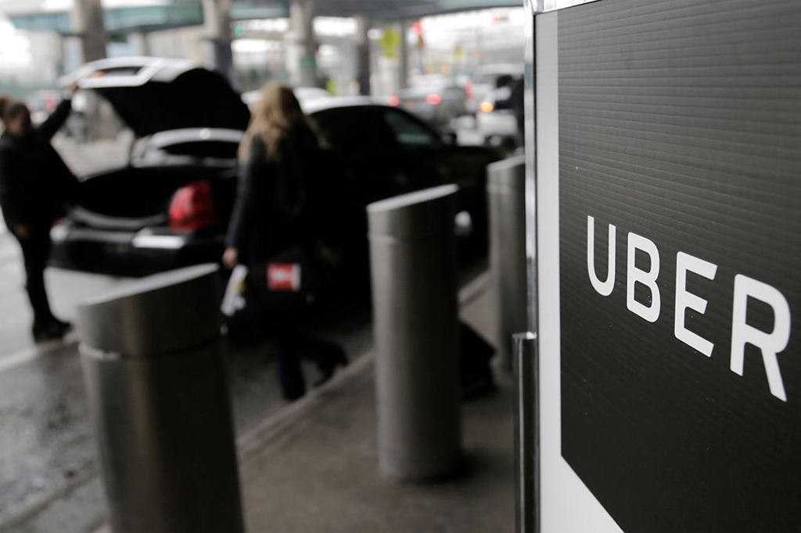

REISEVEI
Fly er den mest effektive måten man kan komme seg til Los Angeles. De fleste land i verden tilbyr enten direkte eller mellom-landing fly. Det finnes en rekke med flyselvskaper som alle tilbyr varierende priser. Om man føler for å spoile seg litt kan man kjøpre første-klasse billetter, hvor man kan oppleve den behagligste flyturen i sitt liv. Gratis drikke og mat, med de store sitteplasser og uendelig beinrom. Hvis du bor over-havs så er fly mest sannsynlig den eneste måten du kan komme deg til Los Angeles.
Ferje og båt er, fra noen nærmeliggende land, en veldig fin måte å besøke eventyret som venter i Los Angeles. Dette er en litt mindre effektiv måte å reise, men er mer enn nok verdt tiden med tanke på alle aktiviteter som tilbys på slike ferjer. Hvis tid ikke er et problem og du sikter på en minneverdig tur og reisevei så er ferje valget for deg!
Hvis du allerede har kommet deg over til USA og sikter på å komme deg til Los Angeles så tilbyr de fleste stater utleie av biler som kan være akkurat det du leter etter! Veien fra de fleste stater til Los Angeles tilbyr utrolige utsikter, fine veier og mange atraksjoner på veien. Dette er valget for dem som elsker å kjøre eller ønsker en fantastisk road trip med gode venner eller familien. Alt fra Sportsbiler til stasjonsvogner er tilgjengelige i de fleste bilutleietjenestene i USA.
Hvis du ikke ønsker å kjøre selv, men fortsatt vil se utsikten på roadtripen så er det mulig å finne UBER-sjåfører som er tilgjengelige helt til Los Angeles. Dette kan fort bli dyrt så i vår anbefaling så kan dette være noe å unngå. Men har du pengene og lysten til å bruke Uber helt til Los Angeles så er det bare å gjøre det!
Hvis du vil spare litt penger, sitte tibake og bare nyte utsikten så er buss den perfekte løsningen for deg. Hvis du ikke har noe mot en litt lengre reisetid og offentligheten så er buss en av de mere avslappende valgene for deg. Men igjen så må du allerede være i USA for at dette skal være en valgmulighet for deg. Det tilbys buss turer til Los Angeles fra de aller fleste stater i USA. Om det ikke er direkte så kan vi garantere at du finner noe som stopper i andre stater og kan bytte derifra.